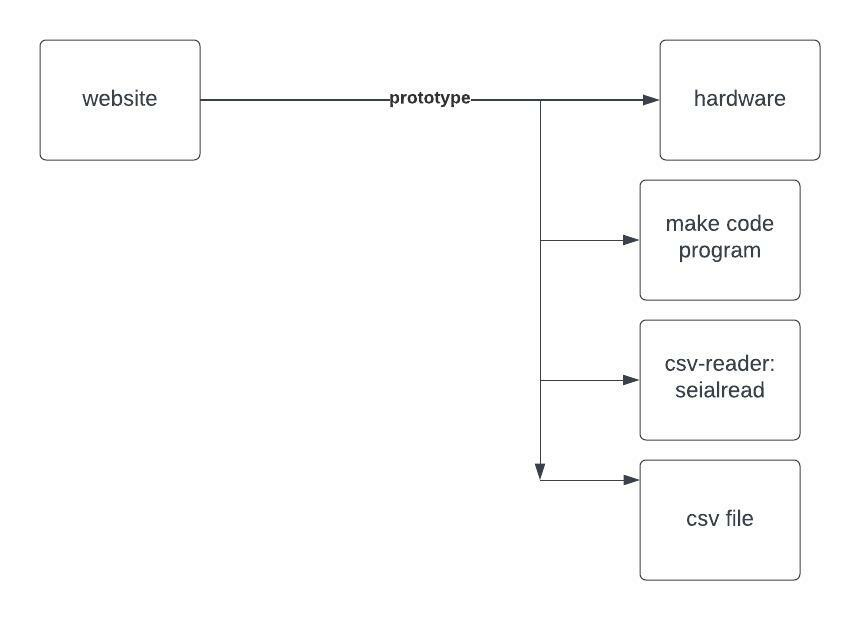
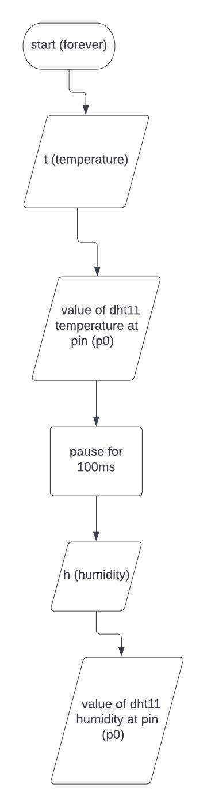
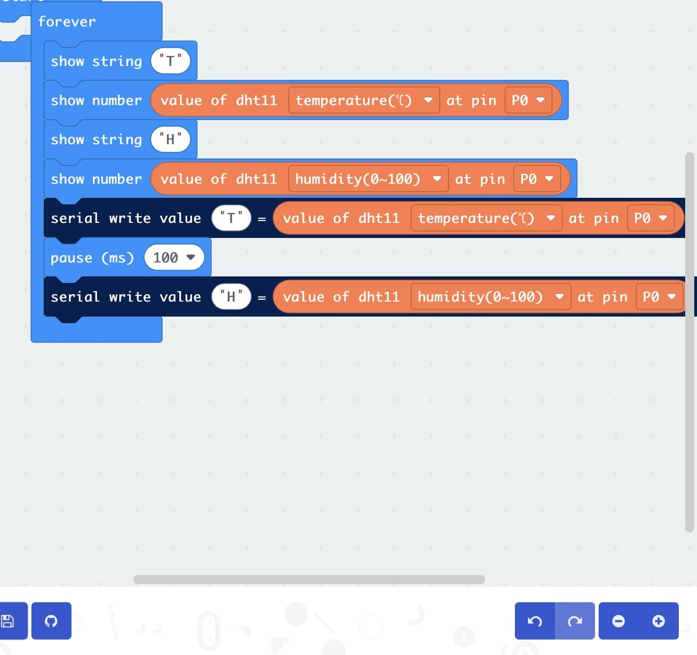
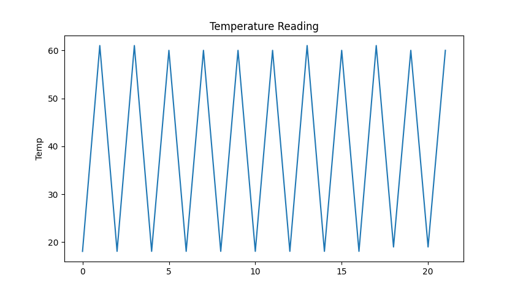

for my website and embedded system, before making any part of them i made sure that i knew what was prototyping so i could make this a really efficient prototype, a prototype is an early version or model of a product, it is built to test a concept or a process in advance and to get feedback from users, throughout making my artefact i reminded myself that my goal was to get user feedback, prototyping would make my artefact better in later stages because i would have recieved feedback and now know how my user like stuff, example user interface designs
the overall system architecture:
Before I started writing my code I drew up a flowchart on how I was going to get the embedded system to do what it supposed to which is read the temperature and humidity so my code had a start point which was the forever function in the makecode, there were no decisions and inputs, the outputs were t, h, value of dht11 temperature at pin p0, value of dht11 humidity at pin p0, I had a process carried out which was to pause in between the outputs of 100 ms, drawing out the flowchart made the making the code much easier and a way of identifying and eliminating uncessary steps, it brought a shared understanding between myself and my users and it was a means of checking that the development process is correct
my flowchart:
when i finished flowcharting i went to write my code, the two variables that i wanted my microbit to take in and store were t and h short for temperature and humidity, their variable types were floats so it the rounding was accurate, the volume of data for my temperature variable was unlimited but the humidity variable was set to 0-100, the microbit will start storing data immediately when it is connected to the code, this data will also get stored in the website and it will act as a data backup
i wanted my project to have a user-centered design, so i thought up of other ways to display the data shown on the microbit, i came up with a graph that would be accesible on the website, the coding for the graph was done on python, when the microbit would connect and collect data it would send the temperature data to a csv file, thonny file would import matplotlib and display a graph for the user, i used graphing the information because its makes my artefact have universal deign, universal design is the process of designing a product so that everyone can understand, access and use it
Before making my website and my artefact I had recognized that they were intended for my target market which I mentioned, I made my website user friendly by using font colours that mixed well, a navigation bar, I made an about page about the company, everything is labelled, I made my artefact for user interaction by finding the target market that would need it, getting it to complete tasks, adding necessary stuff on to it such as a graph that can be seen on the website, i made sure to carefully consider my users, my user requirements and the requirements of the client, in order to make the right design decisions and give my users a good userface design, my artefact meets with the 7 principles of universal design which are equitable use, flexibility in use, simple and intuitive use, perceptible information, tolerance for error, low physical effort, size and space for approach and use
